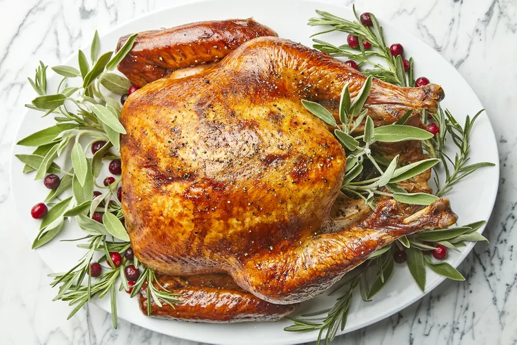
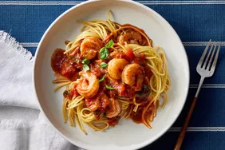

Roast Turkey

Ingredients
- Turkey This recipe calls for an 18-pound whole turkey.
- Stuffing: You'll need eight cups of prepared stuffing.
- Butter: Salted butter, rubbed onto the skin, ensures a juicy roast turkey every time.
- Salt and pepper:This roast turkey is simply seasoned with just salt and pepper. Of course, you can add more spices to suit your taste.
- Turkey stock:The bird is cooked in and basted
How to make
- Prepare the turkey:Remove the turkey neck and giblets. Pat the turkey dry with paper towels, then place it (breast-side up) on a rack in a roasting pan.
- Stuff and season the turkey:Fill the cavity with stuffing. Rub the skin with butter, then season with salt and pepper. Pour two cups of stock into the roasting pan and loosely tent the turkey with foil.
- Roast the turkey:Roast, basting with stock every 30 minutes, for about two and half hours. Add more stock as the drippings evaporate. Remove the foil and continue roasting until a meat thermometer inserted into the thickest part of the thigh reads 165 degrees F.
Shrimp Marinara

Ingredients
- Pasta
- Oil
- Shrimp
- Canned tomatoes
- Seasonings
- Balsamic vinegar
How to make
- Make the spaghetti.
- Cook the shrimp and transfer to a plate.
- Cook the garlic and red pepper to the skillet and cook until fragrant.
- Stir in the remaining ingredients and bring to a boil, then simmer until thickened.
- Return the shrimp to the skillet and cook until heated through.
- Serve over spaghetti and garnish with fresh basil.
Pumpkin-Black Cocoa Swirl Cake

Ingredients
- 3 tablespoons black cocoa powder (such as The Cocoa Trader Black Dutched Cocoa Powder)
- 3 tablespoons unsweetened Dutch processed cocoa powder (such as Ghirardelli Premium 100% Unsweetened Baking Cocoa Powder)
- 2 tablespoons white sugar
- 1/4 cup milk
- 1 teaspoon espresso powder (optional)
- 1 (1 ounce) square semi-sweet baking chocolate, melted and cooled slightly
How to make
- Preheat the oven to 350 degrees F. Spray a 12-cup Bundt pan with a baking spray containing flour, such as Baker's Joy®.
-
- In a large bowl, sift together flour, pumpkin pie spice, baking powder, baking soda, and salt.
- In another large bowl, beat butter, oil, and 2 cups white sugar on medium-high speed with an electric mixer until creamy, about 3 minutes. Add in eggs, 1 at a time, beating well after each addition. After adding in the last egg, beat mixture on medium-high speed until doubled in volume, about 5 minutes. Add in pumpkin and vanilla, and mix until incorporated. Reduce mixer speed to low; pour in half of dry ingredients, and mix until just combined. Add in sour cream; mix until just combined. Add in remaining dry ingredients and mix until just combined.
- Measure out 3 cups batter into another bowl. To this 3 cups batter, add 3 tablespoon black cocoa powder, unsweetened cocoa powder, 2 tablespoons sugar, milk, espresso powder, and melted semi-sweet chocolate. Mix on low speed until combined.
- Place 1/3 of black cocoa batter into an even layer in the bottom of the prepared Bundt pan. Pour 1/2 of plain pumpkin batter over the black cocoa layer. Add another 1/3 of black cocoa batter over the top of plain pumpkin batter. Layer remaining 1/2 of plain pumpkin batter over that. Finish with remaining 1/3 of the black cocoa batter.
- Bake cake in the preheated oven until a bamboo skewer inserted into the center of the cake comes out mostly clean, 60 to 65 minutes. Allow cake to cool in pan 25 to 30 minutes before inverting onto a wire rack to cool completely.
- To make icing, place powdered sugar, 2 tablespoons black cocoa, 1 teaspoon vanilla extract, pinch of salt, and heavy cream into a bowl. Whisk until smooth. Drizzle icing over cooled cake.